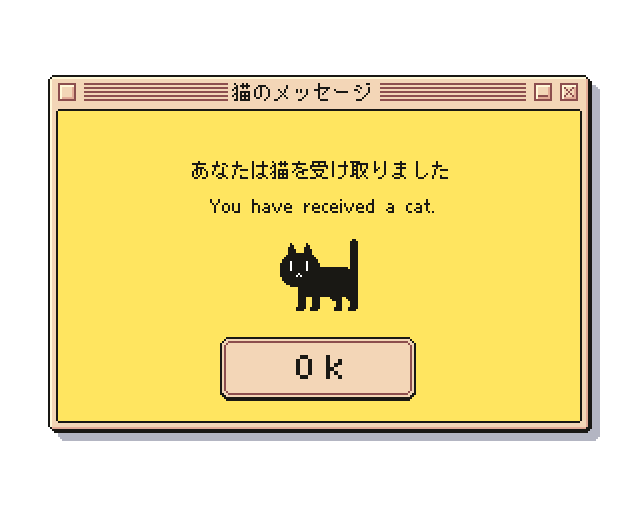

⋆. 𐙚˚࿔ ABOUT 𝜗𝜚˚⋆

Saya membuat dan mendesign website ini untuk memenuhi tugas saya di mata kuliah pemrograman website.
website ini merupakan salah satu contoh coding yang digunakan di mata kuliah berbasis komputer seperti sistem informasi, bisnis digital,
komputerisasi akuntansi dan banyak lagi.
jika ada kritik dan saran mengenai website yang saya buat, pengunjung dipersilahkan untuk menghubungi
saya melalui page Kontak pada website ini.